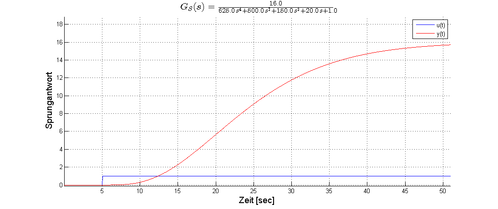
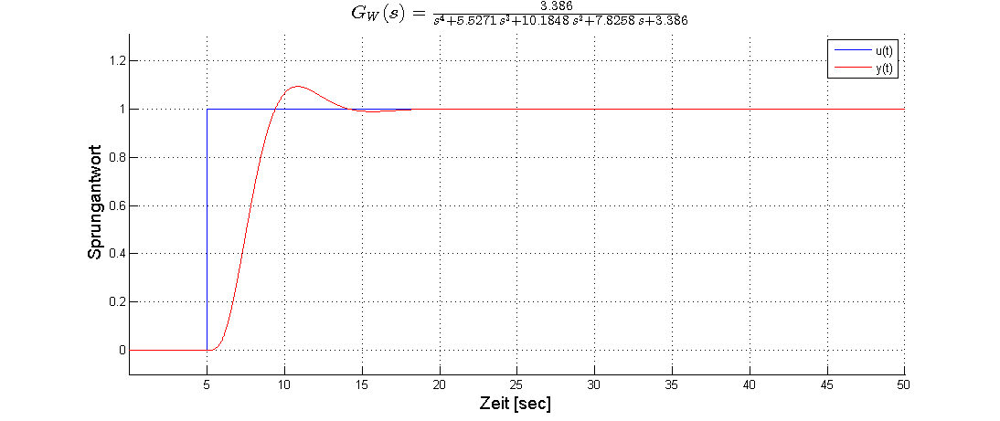
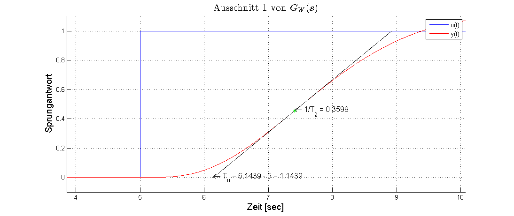
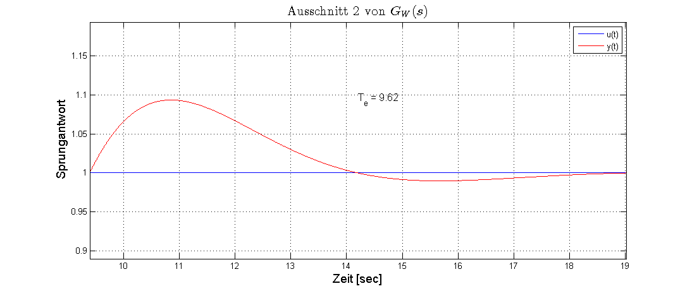
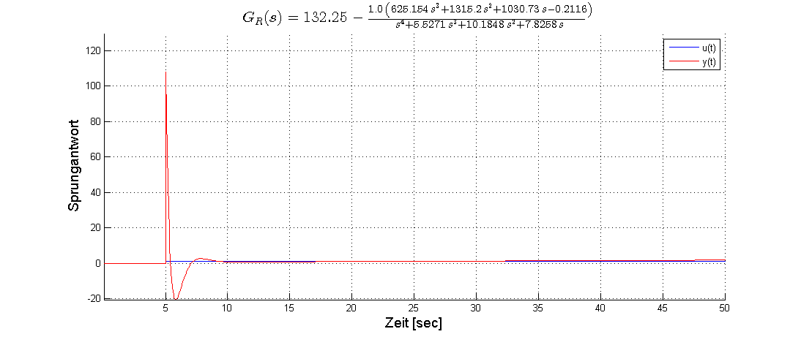

Beispiel 2 - Führungsübertragungsfunktion, sichtbares Überschwingen
Dies ist ein Beispiel für die verwendung der Funktion sprung_plot(), die in Verbindung mit dem Simulinkmodel sprung.mdl das Plotten von Sprungantworten beliebiger System ermöglicht. Speziell für Führungsübertragungsfunktion geschlossener Regelkreise, die ein PT2 ähnliches Verhalten besitzen, unterstützt sprung_plot() die Auswertung durch analyse des Kurvenverlaufs Das Beispiel aus der Übungsaufgabensammlung der Vorlesung AR zum Abschnitt Vorgabe Führungsübertragungsverhalten
Aufgabe: WP00_FMR_01_Vorgabe_Führungsverhalten_005.pdf
clc; clear all;
- Anlegen von Variablen zur Ausgabeunterstützung
t_max = 5; Delta = 10.0;
- Regelstrecke
Z_S = 16; N_S = [625 500 150 20 1];
- Weitere Stützwerte
pole = roots(N_S); domP = min(abs(pole)); if domP ~= 0.0 domT = 1 / domP; else domT = 10.0 end
- Regelstrecke
[bin, Result.G_S] = sprung_plot(Z_S,N_S,'Typ','G_S',... 'Tbase',domT,... 'Res', 1e-3) Result.G_S.fcn Result.G_S.mdl Result.G_S.plt
bin =
10
Result =
G_S: [1x1 struct]
ans =
Z: 16
N: [625 500 150 20 1]
D: 0
ans =
Tbase: 5.0005
Res: 1.0000e-03
Config: [1x1 Simulink.ConfigSet]
t: [1000x1 double]
u: [1000x1 double]
y: [1000x1 double]
dy: [1000x1 double]
ans =
Delta: 0
Typ: 'G_S'
fpath: [1x86 char]
fname: 'G_S-20140505-23-06-25h'
latex: [1x78 char]
 - Führungsübertragungsfunktion des geschlossenen Kreises
Z_W = [3.386]; N_W = [1 5.5271 10.1848 7.8258 3.386];
- Plot der Führungsübertragungsfunktion
[bin, Result.G_W] = sprung_plot(Z_W,N_W,'Typ','G_W',... 'Tbase',t_max,... 'Delta',Delta,... 'Res',1e-4) Result.G_W.fcn Result.G_W.mdl Result.G_W.plt
bin =
10
Result =
G_S: [1x1 struct]
G_W: [1x1 struct]
ans =
Z: 3.3860
N: [1 5.5271 10.1848 7.8258 3.3860]
D: 0
fg: 0.3599
Tu: 1.1439
Te: 9.6200
ans =
Tbase: 5
Res: 1.0000e-04
Config: [1x1 Simulink.ConfigSet]
t: [10000x1 double]
u: [10000x1 double]
y: [10000x1 double]
dy: [10000x1 double]
ans =
Delta: 10
Typ: 'G_W'
fpath: [1x86 char]
fname: 'G_W-20140505-23-06-29h'
latex: [1x78 char]
   Übertragungsfunktion des Reglers
D_R = 132.25; Z_R = [-625.154 -1315.1998 -1030.7301 0.2116]; N_R = [1 5.5271 10.1848 7.8258 0.0];
- Plot der Reglerübertragungsfunktion
[bin, Result.G_R] = sprung_plot(Z_R,N_R,'Res',1e-3,... 'Tbase',t_max,... 'Typ','G_R',... 'D',D_R) Result.G_S.fcn Result.G_S.mdl Result.G_S.plt
bin =
10
Result =
G_S: [1x1 struct]
G_W: [1x1 struct]
G_R: [1x1 struct]
ans =
Z: 16
N: [625 500 150 20 1]
D: 0
ans =
Tbase: 5.0005
Res: 1.0000e-03
Config: [1x1 Simulink.ConfigSet]
t: [1000x1 double]
u: [1000x1 double]
y: [1000x1 double]
dy: [1000x1 double]
ans =
Delta: 0
Typ: 'G_S'
fpath: [1x86 char]
fname: 'G_S-20140505-23-06-25h'
latex: [1x78 char]
